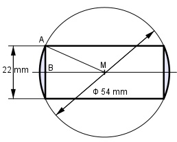

Aufgabe 394 Wie groß ist die Masse m des Rings, wenn er eine Dichte von 21,4 g/cm3 hat?

VRing = 2 * (VKugelschicht - VZylinder) Satz von Pythagoras im Dreieck MAB: MA = rKugel = 54 mm/2 = 27 mm AB = 22 mm/2 = 11 mm = hKugelschicht = hZylinder MA2 = AB2 + MB2 |-AB2 MB2 = MA2 - AB2 = 272 mm2 - 112 mm2 = 608 mm2 |√ MB = 24,66 mm = r1 r2 = 54 mm/2 = 27 mm л VKugelschicht = --- * hKugelschicht * 6 * (3 * r12 + 3 * r22 + hKugelschicht2) VKugelschicht = л = --- * 11 * (3 * 24,662 + 3 * 272 + 112) mm3 6 VKugelschicht = 23 788,5 mm3 VZylinder = л * r12 * hZylinder = = л * 24,662 * 11 mm3 = 21 004,3 mm3 VRing = 2 * ( 23 788,5 - 21 004,3) mm3 = 5 568 mm3 = 5,568 cm3 = m = VRing * ρ = 5,568 cm3 * 21,4 g/cm3 = 119 g